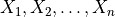

Kenya¶
The Kenya dataset [CM77] contains 16 observations and two variables in total. It concerns an anthropological study on the “Ol Molo” and “Kamba” populations described above. Table 1 shows the sample frequencies of the 16 phenotypic combinations in the samples selected from the two populations.
Given  and …
>>> from __future__ import print_function
>>> from matplotlib import mlab
>>> import numpy as np
>>> from permute.data import kenya
>>> d = kenya()
>>> for i in range(len(d)):
... if i == 0:
... print(d.dtype.names)
... print(d[i])
('classes', 'ol_molo', 'kamba')
(1, 12, 0)
(2, 1, 0)
(3, 8, 6)
(4, 2, 1)
(5, 0, 0)
(6, 1, 0)
(7, 1, 0)
(8, 0, 0)
(9, 0, 0)
(10, 2, 0)
(11, 8, 15)
(12, 6, 0)
(13, 0, 0)
(14, 0, 0)
(15, 3, 1)
(16, 1, 0)
>>> import matplotlib.pyplot as plt
>>> plt.plot(d['ol_molo'])
[<matplotlib.lines.Line2D object at ...>]
>>> plt.plot(d['kamba'])
[<matplotlib.lines.Line2D object at ...>]
>>> plt.legend(['ol_molo', 'kamba'])
<matplotlib.legend.Legend object at ...>
>>> plt.show()
{kind=link}
{kind=link}